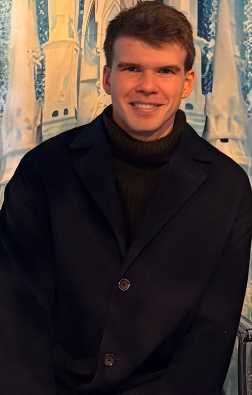

Nathan Senyard
Undergraduate Researcher · University of British Columbia
Hey! I am Nathan Senyard. Currently I'm a student at the University of British Columbia researching recognition of hedgerows from satellite images under professors Mathias Lecuyer, Evan Shelhamer, and Josephine Gantois. I also work on a project leveraging open-source LLM models for automated ethical dialogue under professor Christoph Sielmann. After this summer, I'll be joining Stripe Toronto as a Software Engineer. Thanks for checking out my site! There'll be more here soon, I promise.